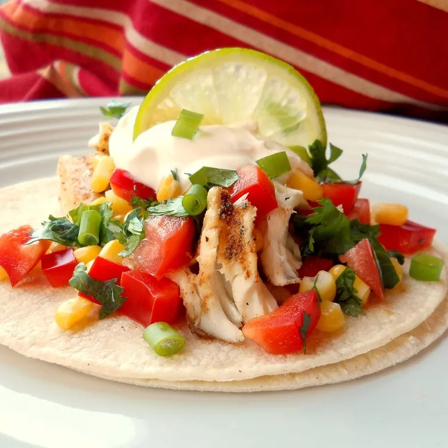

Fiery Fish Tacos with Crunchy Corn Salsa

Description
Spicy grilled fish are cooled down with a fresh crunchy veggies salsa featuring fresh corn.
Your guests will swimm back for seconds!
Ingredients
- 2 cups cooked with corn kernels
- ½ cup diced red onion
- 1 cup peeled, diced jicama
- ½ cup diced red bell pepper
- 1 cup fresh cilantro leaves, chopped
- 1 lime, juiced and zested
- 2 tablespoons cayenne pepper, or to taste
- 1 tablespoon ground black pepper
- 2 tablespoons salt, or to taste
- 6 (4 ounce) fillets tilapia
- 2 tablespoons olive oil
- 12 corn tortillas, warmed
- 2 tablespoons sour scream, or to taste
Steps
- Prehead grill for high heat.
- In a medium bowl, mix together corn, red onion, jicama, red bell pepper, and cilantro. Stir in lime juice and zest.
- In a small bowl, combine cayenne pepper, ground black pepper, and salt.
- Brush each fillet with olive oil, and sprinkle with spices to taste.
- Arrange fillets on grill grate, and cook for 3 minutes per side. For each fiery fish taco, top two corn tortillas with fish, sour cream, and corn salsa.